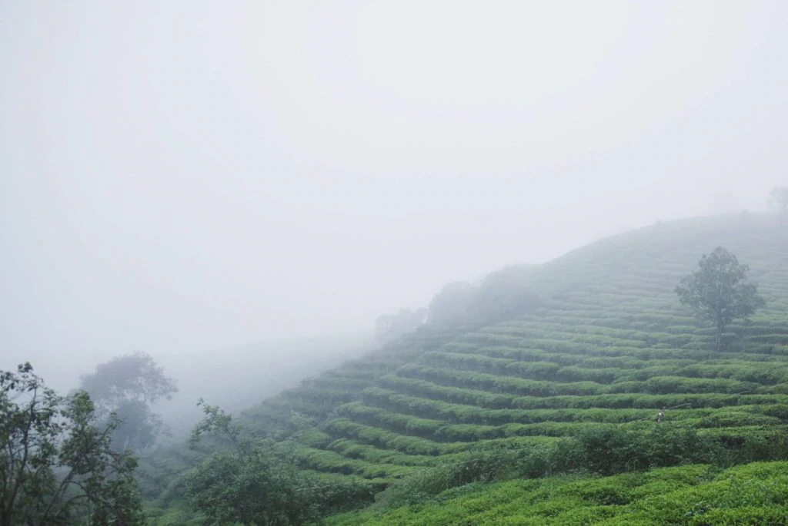

Vietnam is the second largest coffee producer in the world. Second to rice, coffee is Vietnam’s largest exported commodity and accounts for over 18% of global coffee exports. Coffee was first introduced to Vietnam in 1857 by the French, influencing Vietnamese coffee to be made typically as a dark or French roast. Vietnamese coffee production boomed after political and economic reforms in the 1990s, particularly within specialty coffee markets over the last 15 years.
Coffee is typically grown in the temperate Central Highlands of the country, using basalt (volcanic) soil, which is perfect for growing coffee, cacao (which explains the mocha notes in the coffee) and pepper. Copper Cow Coffee sources its coffee from sustainable, organic farms in the scenic town of Dalat within this region.
Vietnam primarily grows robusta coffee, famous for its high caffeine content and bitter profile. Arabica coffee, most popular in the US specialty coffee market, continues to grow rapidly in production and export in Vietnam. You can now find many cafes (such as the Workshop and Shin Coffee) serving arabica and catimor blends. Vietnam Coffee Republic even offers single origin Arabica Vietnamese Coffee. Copper Cow Coffee carefully combines the signature robusta and arabica blends to give a smooth but authentic flavor.
Traditionally, Vietnamese coffee is known for having a dark roast. The roasting process often includes added flavors such as mocha, chicory, vanilla, butter or even whiskey. Copper Cow Coffee opts for an all-natural European-style roast, that lets the natural flavors of our specialty bean brew through.